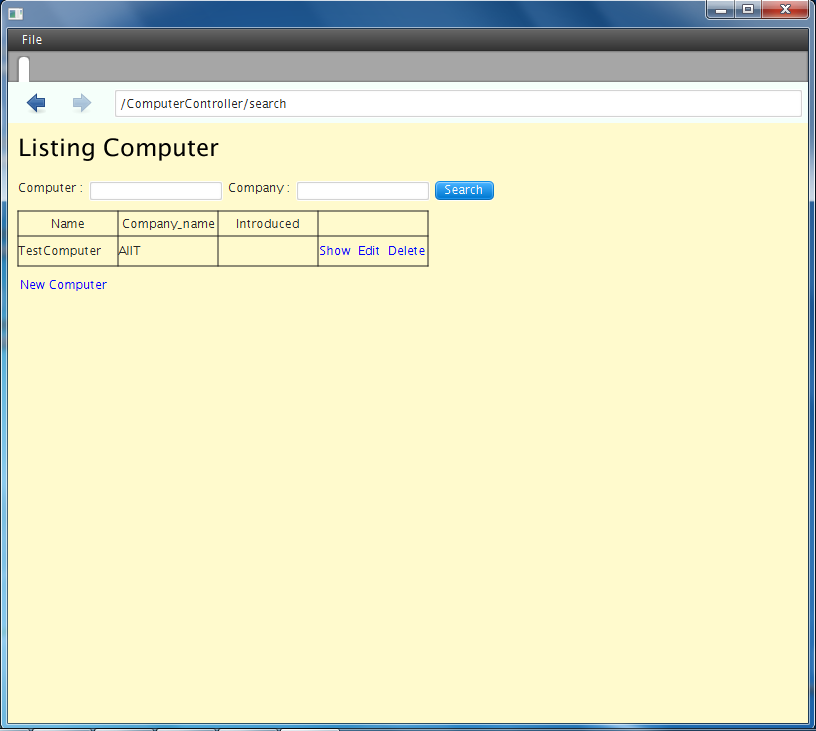

ここでは、Creamyを利用した簡単なアプリケーションの作成方法を説明していきます。
次のような画面を作成します。
画面例
開発を始める前に、JavaFX開発環境をセットアップする を参考に準備をしておいてください。
次の手順で作成します。
まず、NetBeansにCreamyプロジェクトを作成します。
Creamyプロジェクトの作成 の手順通りに行えば、簡単に作成することができます。
ここでは、NetBeansに NewProjeSample というプロジェクトが作成できますが、プロジェクト名は適宜変更可能です。
scaffoldコマンドを使うことで、テーブル作成からmodelsクラスの作成までを自動的に行うことができます。
では、scaffoldによるアプリケーション作成 の手順に従って作成していきましょう。
Computerテーブルは以下の構成にします。
| カラム名 | 型 | 備考 |
| name | String | コンピュータ名 |
| company_name | String | メーカ名 |
| introduced | Date | 発表日 |
scaffoldコマンドの実行
上記のテーブル構成ですので、次のコマンドを実行してください。
creamy_tools scaffold Computer name:String company_name:String introduced:Date
初期起動画面パスの記述
newprojesample.NewProjeSampleクラスの、Browserコンストラクタの引数部分にパスを追記します。
Browser browser = new Browser("/ComputerController/list");
アプリケーションの実行 からの手順は、scaffoldによるアプリケーション作成 と同様ですので、それに従ってください。
実行結果は、以下の通りです。
実行例

データ登録
では、データを登録してみましょう。
New Computer リンクをクリックして、登録画面に遷移させます。
登録画面

Name、Company_name、Introduced（yyyy-mm-dd形式）を入力して Create Computer ボタンをクリックします。
データは登録できたようですが、Introducedが表示されていません。
登録結果画面
次のステップで日付データを扱えるようにプログラムを修正していきましょう。
Note
一旦登録したデータは、アプリケーションを再起動するとクリアされてしまいます。以下を参考に設定を変更しておいてください。
scaffoldによるアプリケーション作成 ebean.propertiesのddl.run設定に関する注意事項
次のコードをComputerControllerクラスに追加してください。Introducedに入力した内容を、Date型に変換して登録します。scaffoldで作成したcreateメソッドは削除しておいてください。
1 2 3 4 5 6 7 8 9 | private SimpleDateFormat formatter = new SimpleDateFormat("yyyy-MM-dd");
public Result create(Computer computer, @Bind("introduced") String _date) {
try {
computer.setIntroduced(formatter.parse(_date));
} catch (ParseException ex) {}
computer.save();
return redirect(LIST_PATH);
}
|
SimpleDateFormatで指定している通り、Introduced値にはyyyy-MM-dd形式で入力します。
データ入力後には、以下のように表示され、日付データが登録できます。
登録結果画面

データが登録できましたので、検索機能を追加してみましょう。
検索画面は次の2つのファイルをコピーして、views.computercontrollerパッケージ下に配置してください。
Search.vm.fxmlファイルは、Scene Builderで開くことができます。
Scene Builder実行例
検索ボタンをクリックして、検索画面が表示されるようにしましょう。
List.vm.fxmlファルに検索リンクを追加
New Computer リンクの下に Search Computer ボタンを配置します。
1 2 3 4 5 6 | <CFHyperlink path="/ComputerController/make" text="New Computer">
<VBox.margin>
<Insets top="10.0" />
</VBox.margin>
</CFHyperlink>
<Button onAction="#search" text="Search Computer" />
|
onAction属性に指定している #search を、Listクラスのメソッドとして追記します。
List.javaにsearchメソッドを実装
1 2 3 4 | @FXML private void search(ActionEvent event) {
// 検索画面を表示して、Searchなら続行、Cancelなら中断
Activity window = createWindow("/ComputerController/search", Modality.NONE);
}
|
ComputerControllerクラスに、以下のsearchメソッドを実装します。
1 2 3 | public Result search() {
return ok(this);
}
|
では、検索画面が表示できるかを確認しましょう。
画面の Search Computer ボタンをクリックすると、検索画面が表示されます。
検索画面表示例

次に、検索処理を実装しましょう。
次は、Search.vm.fxmlファイルの Cancelボタンと Searchボタンの部分です。
1 2 3 4 5 6 7 8 9 10 | <HBox alignment="CENTER" prefHeight="36.0" prefWidth="459.0" spacing="50.0">
<children>
<Button cancelButton="true" mnemonicParsing="false" onAction="#handleCancelAction" text="Cancel">
<font>
<Font size="16.0" fx:id="x2" />
</font>
</Button>
<Button defaultButton="true" font="$x2" mnemonicParsing="false" onAction="#handleSearchAction" text="Search" />
</children>
</HBox>
|
handleCancelActionメソッドとhandleSearchActionメソッドは、ダウンロードしたSearch.javaファイルに実装済みです。検索処理をListクラスに実行させるために、7行目のコメントを外してください。
1 2 3 4 5 6 7 8 9 10 11 12 | // 検索ボタンクリック
@FXML private void handleSearchAction(ActionEvent event) {
Map<String,Object> params = new HashMap<String,Object>() {{
put("computer", computerName.getText());
put("company", companyName.getText());
}};
((List)getOwner()).searchAction(params);
}
// キャンセルボタンクリック
@FXML private void handleCancelAction(ActionEvent event) {
((Stage)this.scene.getScene().getWindow()).close();
}
|
3〜6行目で、入力値を検索条件としてHashMapにセットしています。
7行目で、検索画面のオーナーであるListクラスのsearchActionメソッドを実行しています。
List.javaには、以下のメソッドを実装してください。
1 2 3 4 5 | public void searchAction(Map data) {
requestData("/ComputerController/list")
.params(data)
.execute();
}
|
パスに指定している通り、ComputerControllerクラスのlistメソッドは修正が必要です。scaffoldで作成したlistメソッドは、引数を持ちません。検索条件を指定するためには以下のように修正してください。
1 2 3 4 5 6 7 8 9 10 11 12 13 14 15 | /*
public Result list() {
listOfComputer = Computer.find.all();
return ok(this);
}
*/
public Result list(@Bind("computer") String computerName,
@Bind("company") String companyName) {
computerName = computerName == null ? "" : computerName;
companyName = companyName == null ? "" : companyName;
listOfComputer = Computer.page(computerName, companyName).getList();
return ok(this);
}
|
Note
Controllerクラスには、メソッドのオーバーロードはできません。
次にComputerクラスに次の検索処理を実装してください。
1 2 3 4 5 6 7 8 | public static Page<Computer> page(String computerName, String companyName) {
return
find.where()
.ilike("name", "%" + computerName + "%")
.ilike("company_name", "%" + companyName + "%")
.findPagingList(5)
.getPage(0);
}
|
では、実行してみましょう。
画面の Search Computer ボタンをクリックすると、検索画面が表示されます。Computer name、Company nameに値を入力し、Searchボタンをクリックします。
検索結果画面例